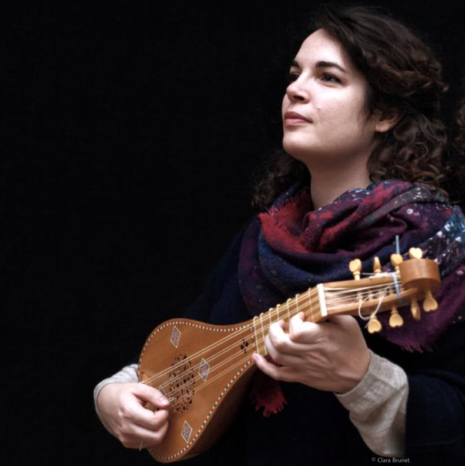
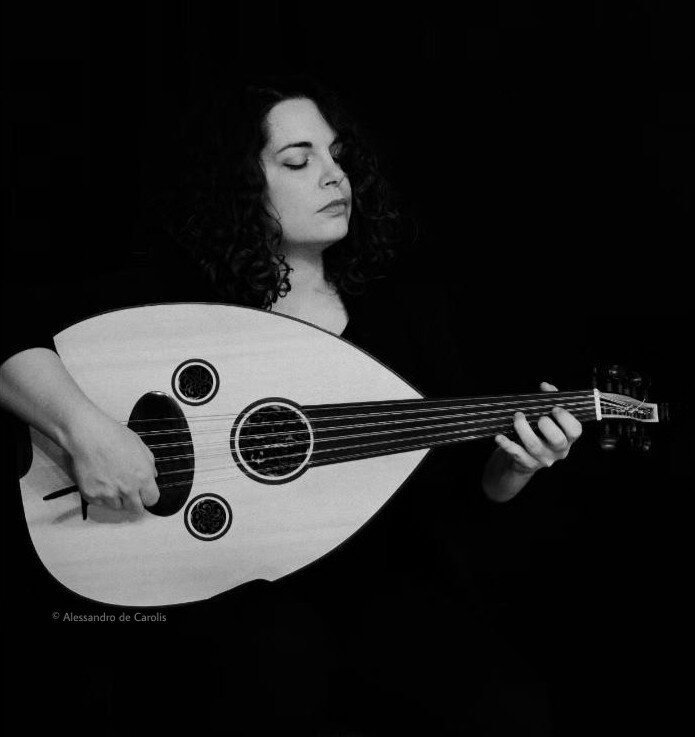

Sara Maria Fantini s’est intéressée très tôt à la musique médiévale, étudiant les techniques des principaux chordophones à plectre (luth, guiterne, oud) et le chant sous la direction de Peppe Frana et Francesca Breschi ; elle suit actuellement un cours de master en luth médiéval à la Schola Cantorum Basiliensis. Depuis 2012, elle se produit dans de nombreux festivals en Italie et en Europe avec divers ensembles italiens, français et suisses (notamment Micrologus, Rubens Rosa, La Chapelle des Ducs de Savoie, Oineroï).
En 2019, elle fonde le projet musical Fragmenta, dédié à la redécouverte et à l’interprétation de répertoires oubliés des XIIIe-XVe siècles ; dans le cadre de ce projet, elle enregistre le CD Vai lavar cabelos na fontana fría pour l’Université de Santiago de Compostela. En 2021 et 2022 elle se produit au festival de Royaumont, obtenant par la suite deux résidences artistiques à la même fondation, avec laquelle elle collabore toujours sur un projet de diffusion de la musique médiévale dans les conservatoires français. Toujours engagée dans la diffusion de la musique médiévale, elle collabore avec plusieurs institutions européennes, dont le Centro Studi Adolfo Broegg, l’academie Resonars d’Assise et l’Université de Lausanne. Après son Master en Musicologie à l’Université de Pavia-Cremona, elle obtient en 2021 un doctorat en philologie romane à l’Université de Sienne, en cotutelle avec l’École pratique des hautes études (EPHE) de Paris.


Le travail de Sara Maria Fantini s'inscrit entre la recherche musicologique et la pratique du concert, avec un intérêt particulier pour les répertoires vocaux et instrumentaux du Moyen Âge italien et méditerranéen : de la polyphonie du Trecento aux musiques traditionnelles du centre de l'Italie, jusqu'aux traditions de la musique classique ottomane et crétoise. Ses projets explorent souvent des matériaux rares ou inédits — fragments musicaux retrouvés en marge de manuscrits, sources fragmentaires de la région des Apennins — en conjuguant rigueur philologique et liberté interprétative. Elle collabore avec des ensembles et des institutions internationaux, notamment Micrologus, Rubens Rosa, La Chapelle des Ducs de Savoie, l'Ensemble Oineroï, la Fondation Royaumont, la Schola Cantorum Basiliensis et le Centro Studi Europeo di Musica Medievale Adolfo Broegg.